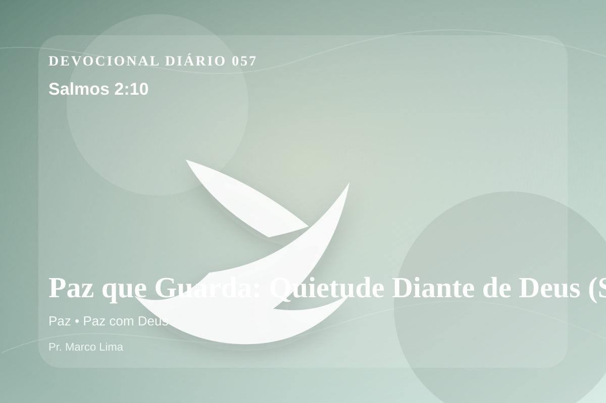

Paz que Guarda: Quietude Diante de Deus (Salmos 2:10)
Portanto agora, reis, sede prudentes; vós, juízes da terra, deixai serdes instruídos.
Pensamento
Nesta nova leitura da mesma passagem, observe como Deus forma fidelidade em meio à pressão. Salmos 2:10 coloca diante de nós uma verdade capaz de atravessar a rotina, confrontar o coração e renovar a esperança em Deus.
Salmos 2:10 chama o coração a ouvir Deus com reverência e responder com fé prática. A Palavra não foi dada para enfeitar pensamentos religiosos, mas para conduzir pessoas reais ao Senhor.
O tema de paz precisa ser recebido com simplicidade e seriedade. O Senhor não usa esta passagem para alimentar vaidade espiritual, mas para formar obediência sincera. A paz bíblica é mais profunda que tranquilidade externa. Ela é fruto da presença de Deus, da reconciliação em Cristo e da confiança de que o Senhor permanece governando mesmo quando a vida parece instável.
Não transforme este devocional em informação religiosa. Pare por alguns instantes, nomeie diante de Deus aquilo que precisa mudar e peça um coração pronto para obedecer.
Arrependimento não é apenas sentir peso na consciência; é voltar-se para Deus, abandonar o caminho que entristece o Senhor e confiar que a graça de Cristo é suficiente para perdoar e transformar.
Este é o evangelho que sustenta toda aplicação: Jesus Cristo morreu pelos pecadores, ressuscitou em vitória e chama cada pessoa a responder com fé, arrependimento e uma vida rendida ao Seu senhorio.
O simples evangelho de Cristo Jesus continua sendo suficiente: arrependa-se, creia, receba perdão e caminhe em obediência pelo poder do Espírito Santo.
Não espere sentir tudo para obedecer. Comece com fidelidade no próximo passo, confiando que Deus sustenta quem responde à Sua voz.
Para Praticar Hoje
- Leia Salmos 2:10 lentamente e destaque uma palavra ou expressão central do texto.
- Confesse a Deus um pecado, resistência ou frieza espiritual que esta Palavra revelou.
- Declare sua fé em Jesus Cristo e pratique hoje uma atitude concreta de arrependimento e obediência.
Oração
Senhor, eu desejo a paz que supera todo entendimento. Salmos 2:10 me mostra que ela nasce da confiança no Senhor, não da estabilidade das circunstâncias. Aproxima meu coração de Ti hoje.
{kind=link}